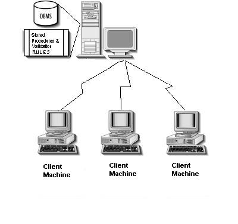

Internet Client means a remote device capable of using the Internet to access selected Licensed Software on the Internet Server or the Enterprise Database on the Database Server via the Internet Server.
An example of an internet client is if you shop at a certain store or use the services of a particular business, then you are a client of that store or business. If you want to go into acting, for example, you'll need to become a client of a talent agent. In computer terms, a client is a computer that makes a request of another computer, called a server.
A web client is a software application that uses hypertext transfer protocol (HTTP) to format, transmit, and receive requests, web content, services, or resources from web servers.
